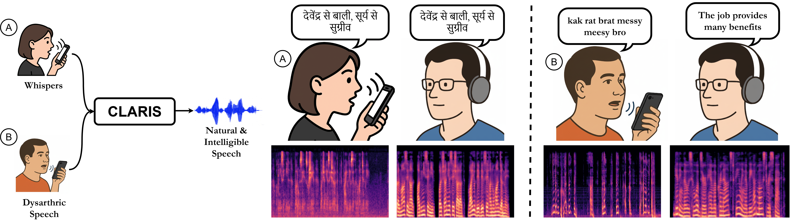

CLARIS: Clear and Intelligible Speech from Whispered and Dysarthric Voices
Note: Publically available checkpoints for the baselines ( FreeVC, QuickVC, WESPER & DistillW2N ) were used.
Abstract:
Whispered and disordered speech, such as dysarthria, often lack intelligibility, making voice interaction difficult in both everyday and clinical contexts. We present CLARIS a lightweight autoregressive system that converts atypical input into natural-sounding speech. Unlike prior approaches that rely on paired data or handcrafted pseudo-whispers, CLARIS combines a TTS-based augmentation pipeline, adversarial alignment between synthetic and real speech, and multi-task linguistic supervision. Across benchmarks, it achieves 12.04 % WER on unseen English whisper speakers, adapts to new accents with only 30 minutes of calibration, and restores intelligibility for dysarthric voices where existing models fail. We further show generalization to a language linguistically distant from English with only 7 hours of data. Listener studies confirm gains in naturalness, prosody, and perceived normalness. By enabling lightweight personalization, CLARIS points toward inclusive, private, and socially mindful voice technologies for diverse users.
CLARIS Teaser Diagram

Proposed Method